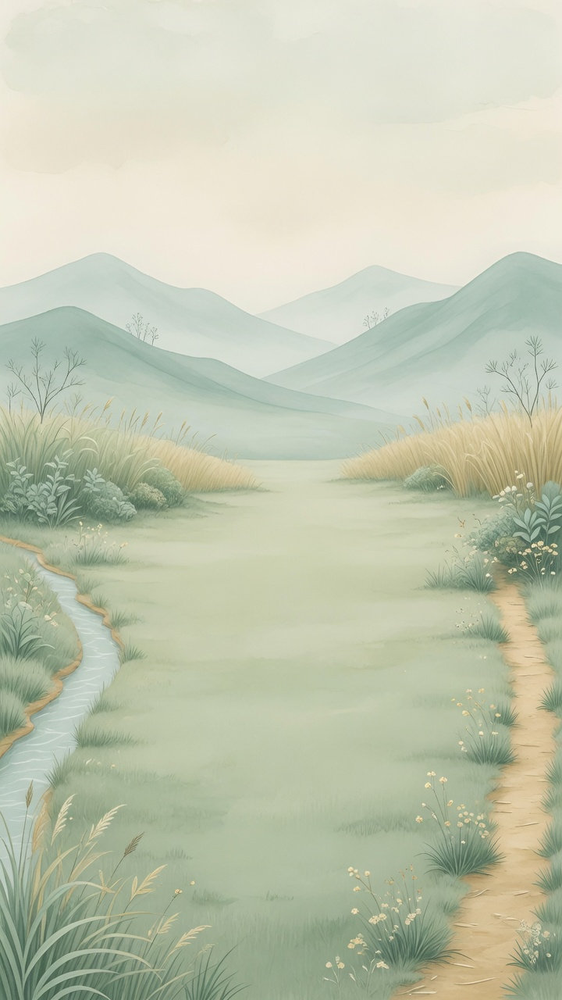
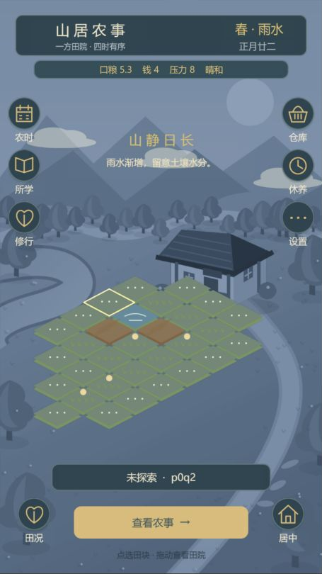
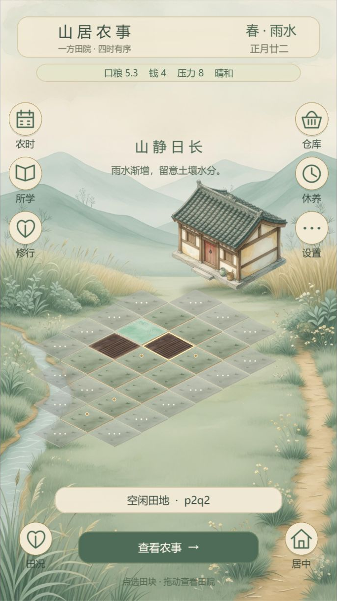
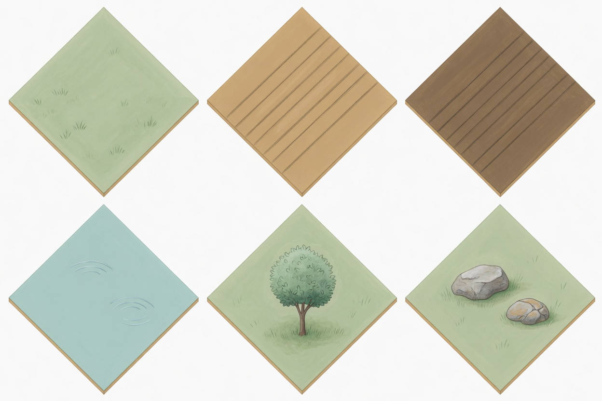
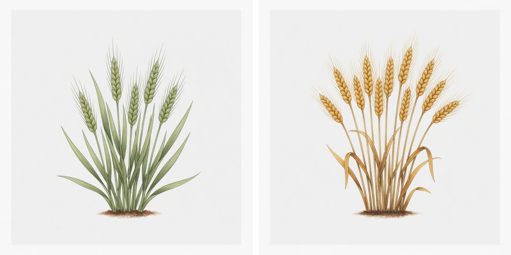
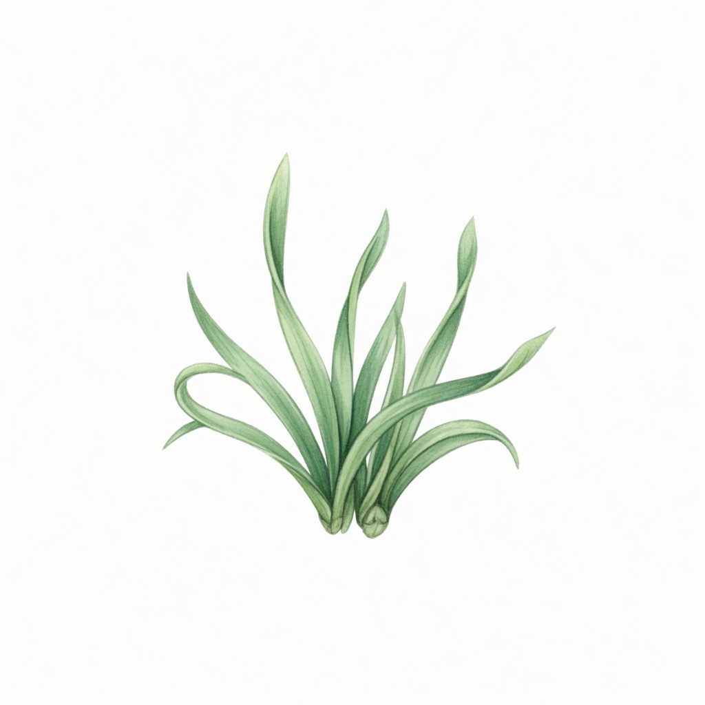
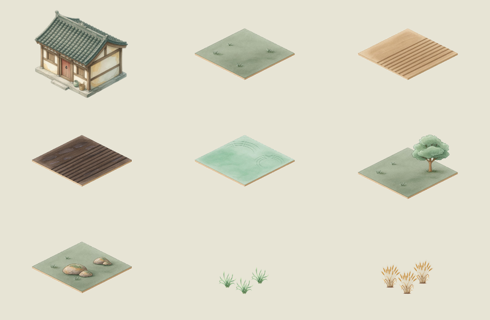

这是第一版制作过程的历史对照。当前游戏已改为连续地面与图标主屏；查看新版画面。
GROK BUILD → COCOS CREATOR
清和田院
把 AI 插画变成可以换肤、可以点击的农场。一次真实的素材生成、返工、抠图与界面接入实例。


清和 · AI 素材原暮色示意
拖动分界线，或用方向键对照。均为实际游戏截图；当前选中地块与视角略有差异。
THE RESULT
图可以换，
游戏依然是真实运行的。
以暖纸色和青绿水彩统一画面。背景的细节留在两侧，中央容纳田块；农舍作为独立透明图片，能自由调整位置。
- 01按功能拆图
背景、农舍、地貌、小麦各自生成。按钮文字与资源数值不交给图片承载。
- 02看原稿，修问题
菱形透视不对、幼苗长出麦穗，各自补一个针对性提示词。
- 03白底 JPG → 透明 PNG
去底、清理边缘、切图、统一地表中线与作物根部位置。
- 04在实际界面里调整
农舍上移避开田块，增加柔和接地阴影，提示文字使用深色。
选择「清和田院 · Grok 水彩」。
01 / GENERATE BY RESPONSIBILITY
提示词先限定构图，再描述风格
共享语言：水彩、水粉、青绿、麦金、暖纸、上左光源。每张图再加上自己必须遵守的边界。


02 / INSPECT & ITERATE
漂亮的原稿，也可能不能直接用

首稿：地块太高，直接拼接会与现有网格错位。
修正：明确宽高比和顶点。输出仍有偏差，最后再做尺寸归一。

小麦首稿：左侧不符合无穗幼株要求；只采用右侧成熟株。

补图：明确“只有窄长草叶，没有麦穗、花、阔叶和可见根系”。
03 / PREPARE GAME ASSETS
透明素材与落脚点，决定拼接质量
这是处理后的素材联系表，不是游戏截图。原生输出为 JPG；透明通道、尺寸归一及小麦成簇排列均在本地完成。

按钮、功能图标与文字继续由代码设计。面板采样 AI 背景的纸纹，配色与场景统一；不把整张概念图当作可操作界面。
04 / CONNECT & REFINE
用风格配置替换，不重写游戏
新包位于 assets/resources/art-packs/qinghe/，在 index.json 注册。原农事、确认和存档继续工作。小麦用专属槽位，其他作物保留通用素材。
实际调整：房屋避开田地，提示文字保持可读
农舍 y 从 62 调到 142，增加柔和接地阴影。底部提示色由 paper 改为 caption；按钮功能和地块命中范围不变。
scene: landscape → cottage.shadow → cottage images: terrain.fieldDry / terrain.fieldWet / crop.wheat.growing / crop.wheat.mature palette: ink / paper / cream / green / caption …
复现素材处理（不再次调用模型）
python tools/process-grok-qinghe.py node tools/export-art-packs.mjs
需要 Pillow、numpy、scipy，会重新生成 qinghe 的派生文件。原稿和完整提示词始终保留。
复用 Grok Build 调用方式
grok --tools image_gen --no-subagents --disable-web-search --max-turns 3 --allow image_gen --prompt-file art/grok-qinghe/prompts/background.txt --output-format plain
本次进程使用系统已配置的 Clash 代理。生成文件先核对实际路径，再复制入工程；不依赖会话缓存。